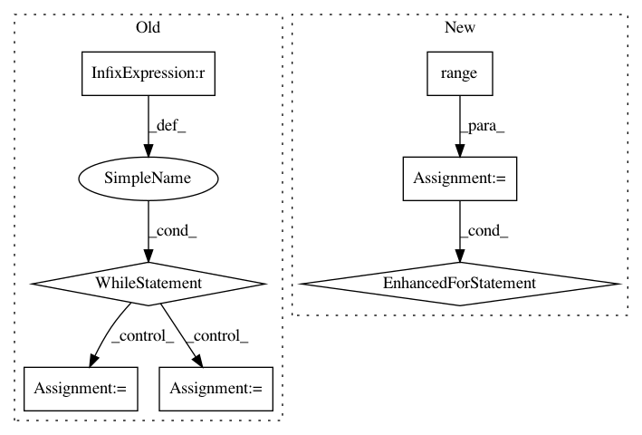

4f2535df9cb702854ef892c0d2a92ef068636ce0,examples/reinforcement_learning/baselines/algorithms/td3/td3.py,,learn,#Any#Any#Any#Any#Any#Any#Any#Any#Any#Any#Any#Any#Any#Any#Any#Any#Any#Any#Any#,271
Before Change
td3_trainer.load_weights()
while frame_idx < test_frames:
state = env.reset()
state = state.astype(np.float32)
episode_reward = 0
if frame_idx < 1:
_ = td3_trainer.policy_net(
[state]
) // need an extra call to make inside functions be able to use forward
_ = td3_trainer.target_policy_net([state])
for step in range(max_steps):
action = td3_trainer.policy_net.get_action(state, explore_noise_scale=1.0)
next_state, reward, done, _ = env.step(action)
next_state = next_state.astype(np.float32)
env.render()
done = 1 if done ==True else 0
state = next_state
episode_reward += reward
frame_idx += 1
// if frame_idx % 50 == 0:
// plot(frame_idx, rewards)
if done:
break
episode = int(frame_idx / max_steps)
all_episodes = int(test_frames / max_steps)
print("Episode: {}/{} | Episode Reward: {:.4f} | Running Time: {:.4f}"\
.format(episode, all_episodes, episode_reward, time.time()-t0 ) )
rewards.append(episode_reward)
After Change
frame_idx = 0
rewards = []
t0 = time.time()
for eps in range(train_episodes):
state = env.reset()
state = state.astype(np.float32)
episode_reward = 0
if frame_idx < 1:
_ = td3_trainer.policy_net(
[state]
) // need an extra call here to make inside functions be able to use model.forward
_ = td3_trainer.target_policy_net([state])
for step in range(max_steps):
if frame_idx > explore_steps:
action = td3_trainer.policy_net.get_action(state, explore_noise_scale=1.0)
else:
action = td3_trainer.policy_net.sample_action()
next_state, reward, done, _ = env.step(action)
next_state = next_state.astype(np.float32)
env.render()
done = 1 if done ==True else 0
replay_buffer.push(state, action, reward, next_state, done)
state = next_state
episode_reward += reward
frame_idx += 1
if len(replay_buffer) > batch_size:
for i in range(update_itr):
td3_trainer.update(batch_size, eval_noise_scale=0.5, reward_scale=1.)
if done:
break
if eps % int(save_interval) == 0:
plot(rewards, Algorithm_name="TD3", Env_name=env_id)
td3_trainer.save_weights()
print("Episode: {}/{} | Episode Reward: {:.4f} | Running Time: {:.4f}"\
.format(eps, train_episodes, episode_reward, time.time()-t0 ))
rewards.append(episode_reward)
td3_trainer.save_weights()
if mode=="test":
frame_idx = 0
In pattern: SUPERPATTERN
Frequency: 4
Non-data size: 7
Instances
Project Name: tensorlayer/tensorlayer
Commit Name: 4f2535df9cb702854ef892c0d2a92ef068636ce0
Time: 2019-07-04
Author: 1402434478@qq.com
File Name: examples/reinforcement_learning/baselines/algorithms/td3/td3.py
Class Name:
Method Name: learn
Project Name: hanxiao/bert-as-service
Commit Name: f0d581c071f14682c46f7917e11592c189382f53
Time: 2018-12-17
Author: hanhxiao@tencent.com
File Name: server/bert_serving/server/__init__.py
Class Name: BertServer
Method Name: _run
Project Name: chainer/chainercv
Commit Name: 93cfd8bd22d6b798b94aead3c8ea75ace2727265
Time: 2019-02-18
Author: shingogo@hotmail.co.jp
File Name: chainercv/functions/ps_roi_max_align_2d.py
Class Name: PSROIMaxAlign2D
Method Name: forward_cpu
Project Name: NVIDIA/OpenSeq2Seq
Commit Name: 42ad0f227fa39fe9b96bc3e08b2e5704dc157e74
Time: 2018-06-26
Author: xravitejax@gmail.com
File Name: open_seq2seq/encoders/w2l_encoder.py
Class Name: Wave2LetterEncoder
Method Name: _encode